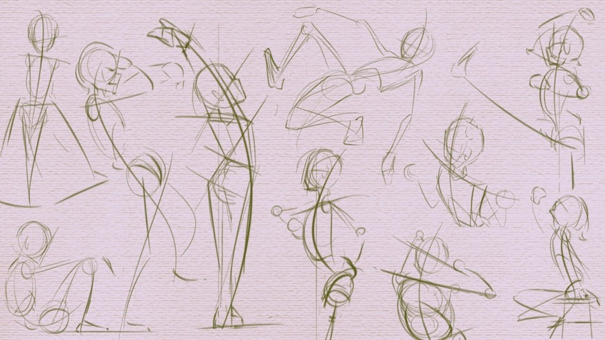
Here is where you will find my concept art and storyboards. You can flip through the images above to see my draftmanship process and how I build shapes and characters.
You'll find here, my project to create an original character. I was challenged to create different variations and find what shapes and colors best told the character's story and represented the character. As well as create a cohesive and compelling story and used elements of the story to create an equally cohesive background I also worked on a turnaround and using that shape breakdown to create different poses.
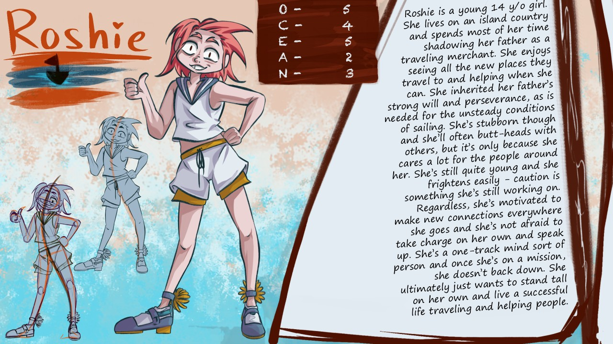
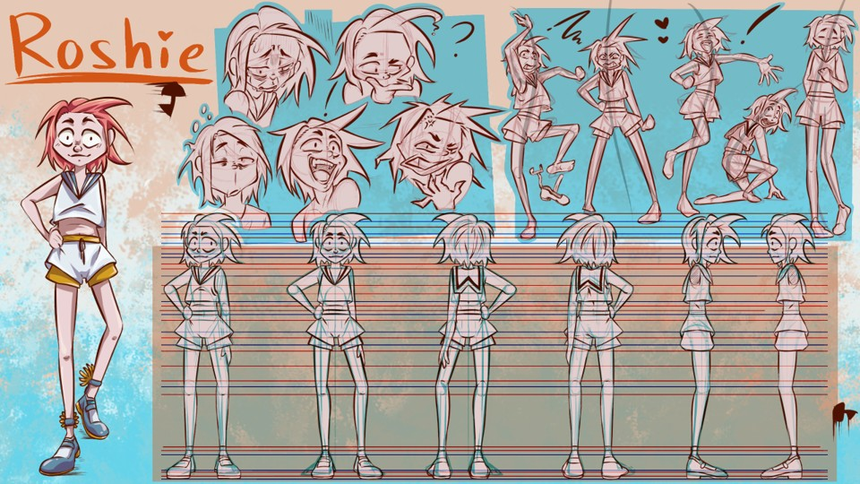
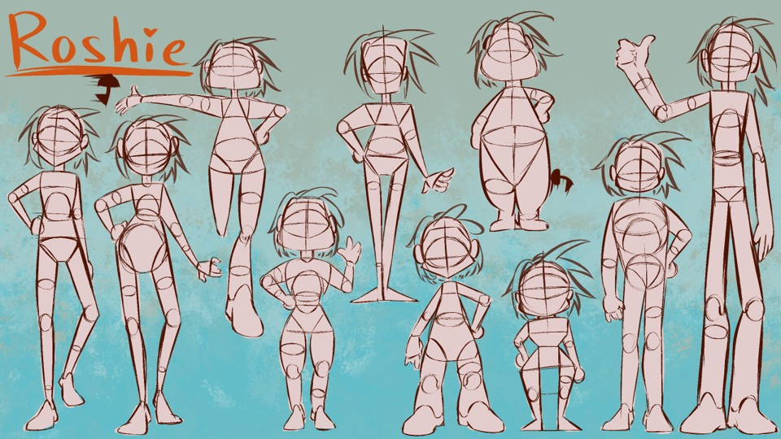
Below is a project where I tried to mainly focus on shape language, silhouette, and composition. It's a simple character, but each variation conveys a different feeling and a different emotion so I wanted to make that clear.
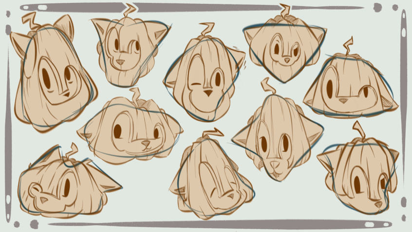
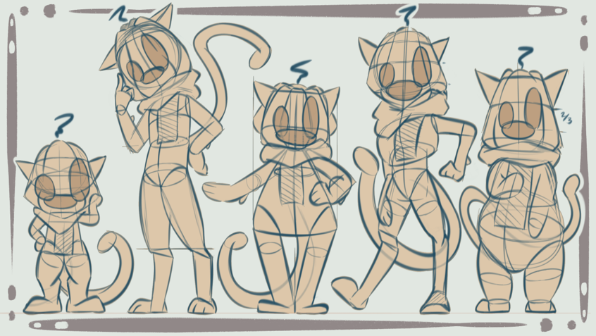
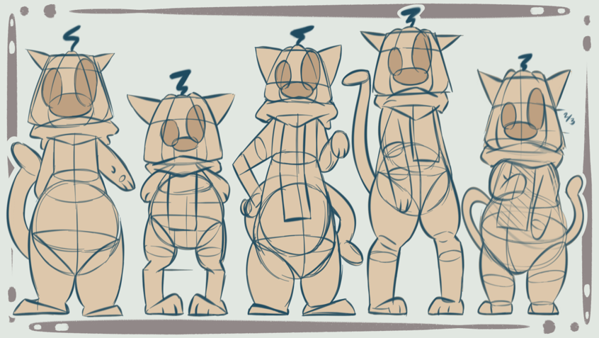
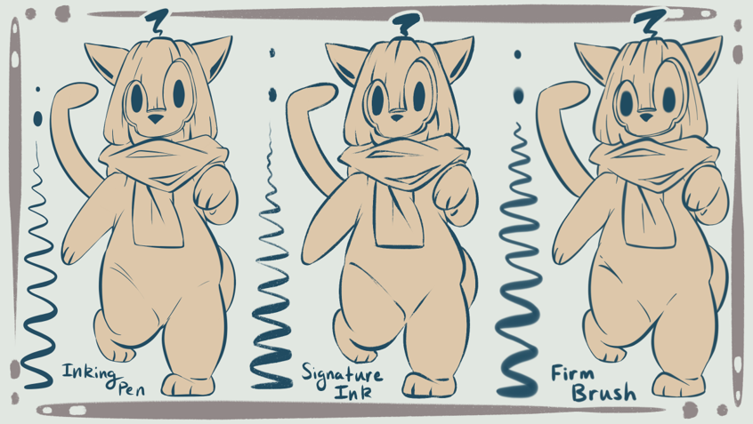
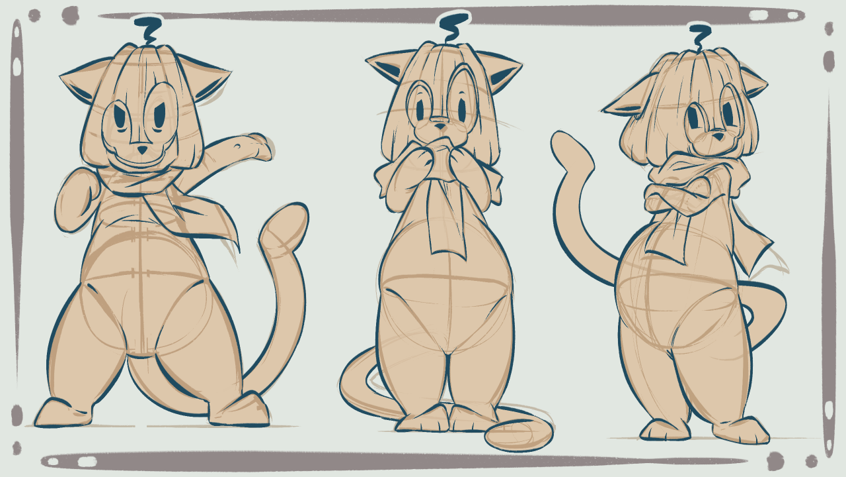
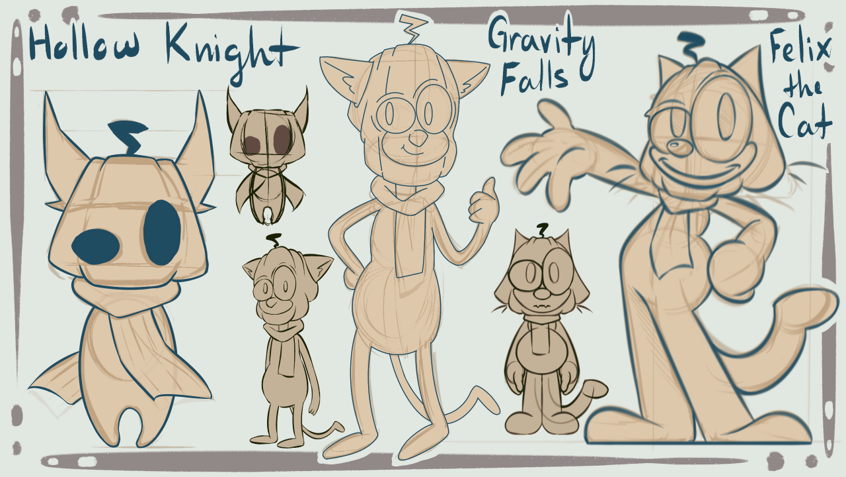
The rest of this page is dedicated to some of my miscellaneous work - please enjoy.
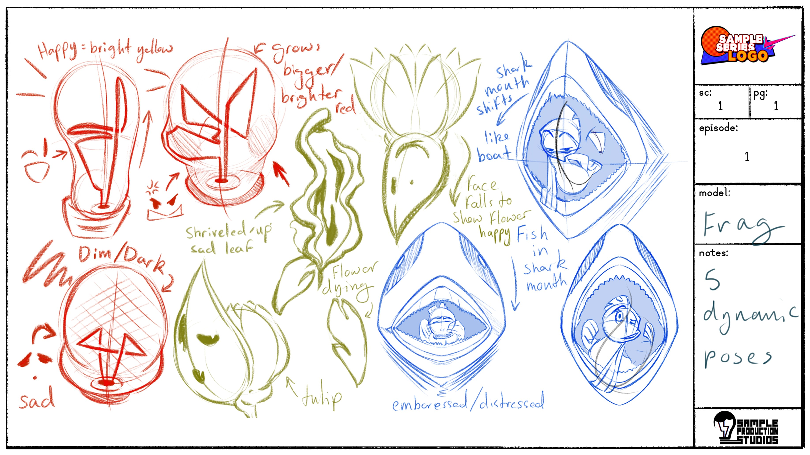
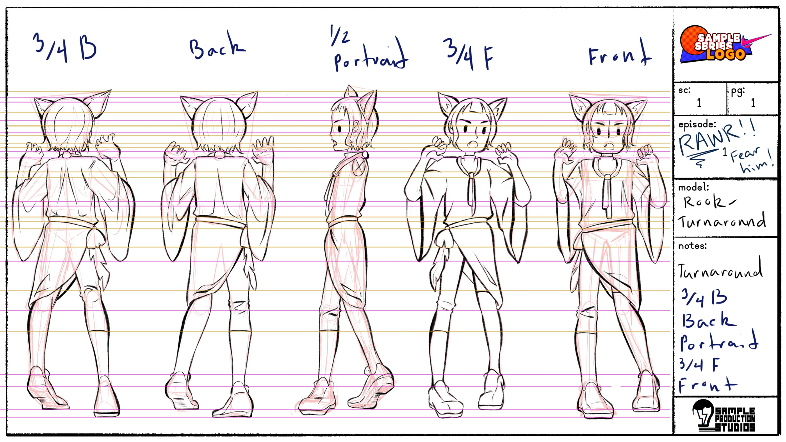
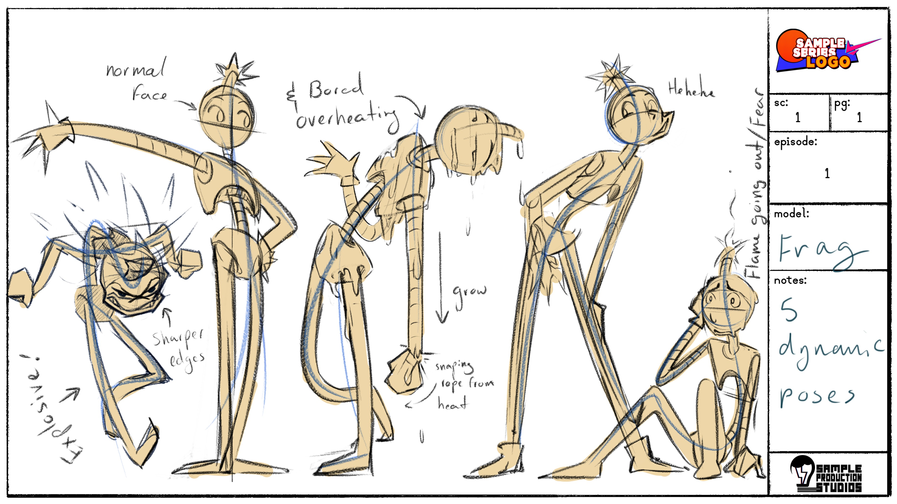
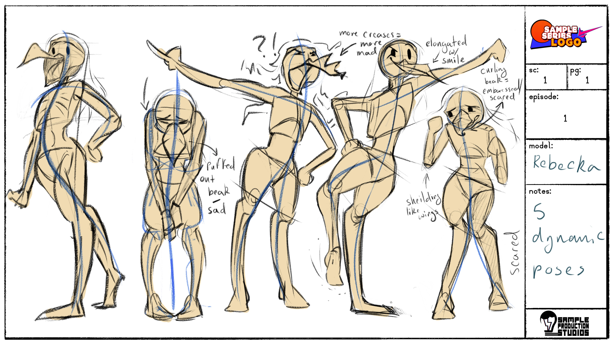
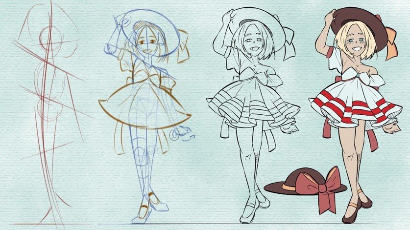
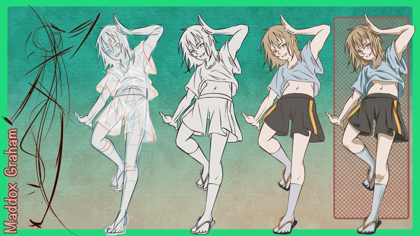